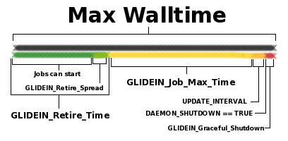
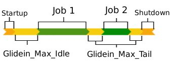

WMS Factory
- Overview
- Details
- Configuration
- Design
- Monitoring
- Troubleshooting
Custom HTCondor Variables
Description
This document describes what configuration variables are used by the glideins. Most administrators never need to touch most of them, but a sophisticated Glidein Factory administrator may need to tweak some of them to implement the desired policies (for example: require encryption over the wire) or to address the needs of a particular site (for example: max allowed wallclock time).
Configuration variable location
The GlideinWMS ships with a set of pre-defined configuration variables, that are stored in two files (known as condor vars files):
glideinWMS/creation/web_base/condor_vars.lst
glideinWMS/creation/web_base/condor_vars.lst.entry
The two files are equivalent, but were split for historical reasons,
and the second one is meant to contain site specific configuration
variables.
These files should never be modified, and represent just the
default shipped by the software!
A GlideinWMS administrator can change the values of the predefined variables (with some exceptions, see below), and define new ones using the Glidein Factory configuration file.
HTCondor vars files
The condor vars files contain the GlideinWMS pre-defined configuration
variables, and should never be modified.
However, a
GlideinWMS administrator should nevertheless be able to read them.
Each of them is an ASCII file, with one entry per row.
Lines
starting with # are comments and are ignored.
Each non comment line must have 7 columns. Each column has a specific meaning:
- Attribute name
-
Attribute type
- I (int) – integer
- S (string) – quoted string
- C (expr) – unquoted string (i.e. HTCondor keyword or expression)
- Default value, use – if no default
- HTCondor name, i.e. under which name should this attributed be known in the configuration used by HTCondor daemons
-
Is a value required for this attribute?
Must be Y or N. If Y and the attribute is not defined, the glidein will fail. -
Will condor_startd publish this attribute to the collector?
Must be Y or N. -
Will the attribute be exported to the user job environment?
- - - Do not export (for glidein/condor internal use)
- + - Export to the user job environment using the original attribute name
- @ - Export to the user job environment using the HTCondor name
Here below, you can see a short extract of an example; the semantics of the variables is defined below.
# VarName Type Default CondorName Req. Export UserJobEnvName # S=Quote - = No Default + = VarName HTCondor - = Do not export # + = Use VarName # @ = Use CondorName ################################################################################################################# X509_USER_PROXY C - GSI_DAEMON_PROXY Y N - USE_MATCH_AUTH C - SEC_ENABLE_MATCH_PASSWORD_AUTHENTICATION N N - GLIDEIN_Factory S - + Y Y @ GLIDEIN_Name S - + Y Y @ GLIDEIN_Collector C - HEAD_NODE Y N - GLIDEIN_Expose_Grid_Env C False JOB_INHERITS_STARTER_ENVIRONMENT N Y + TMP_DIR S - GLIDEIN_Tmp_Dir Y Y @ CONDORG_CLUSTER I - GLIDEIN_ClusterId Y Y @ CONDORG_SUBCLUSTER I - GLIDEIN_ProcId Y Y @ CONDORG_SCHEDD S - GLIDEIN_Schedd Y Y @ SEC_DEFAULT_ENCRYPTION C OPTIONAL + N N - SEC_DEFAULT_INTEGRITY C REQUIRED + N N - MAX_MASTER_LOG I 1000000 + N N - MAX_STARTD_LOG I 10000000 + N N -NOTE The value in the sample are just an example. The default values will depend on the GlideinWMS version, see creation/web_base/condor_vars.lst and keep in mind that the values in the Factory and Frontend configuration and the changes done by the setup scripts will affect the final value used for your jobs.
Glidein Variables
This section defines all the variables that the glideins explicitly use. Please be aware that, apart from the below mentioned variable many other variables will be used by the HTCondor daemons, since glideins are HTCondor based; see the HTCondor manual for more details.
The variables can be divided based on their source:
Factory variables (config - attr tags)
This section presents variables that can be directly changed by a Glidein Factory administrator using attr tags in the Factory configuration XML using the following tags:
<attr name=“name” value=“val” type=“type” .../>
Attr tags can be in both the Factory and Frontend configuration, available types are Int (I in HTCondor vars file), String (S) or Expr (C). String and Expr values are treated literally (no need to escape them) and Strings are quoted when passed to HTCondor.
More information on the XML format can be found in
Glidein Factory configuration
section.
If not specified in the XML, most of these variables have defaults set
in condor vars files, which are used if the Glidein Factory
administrator does not override them. These defaults are listed below.
Please also note that some of these variables may also be provided by the VO clients (e.g. Frontends). See the sections below.
|
Name |
Type |
Default Value |
Description |
| GLIDEIN_Site | String | Entry name |
Logical name of the Grid site where the glidein is running. This information is published both in the startd ClassAd and in the user job environment. |
| GLIDEIN_Hold | Expr (Bool) | True |
HTCondor expression to use to specify when a user job in the glideins should be held. If any expression is true, the glidein is held. This is usually done to specify "bad" jobs, such as those that claim too much memory. |
| GLIDEIN_Entry_PREEMPT | Expr (Bool) | True |
HTCondor expression to use to specify when a user job in the glideins should be preempted. If any expression is true, the glidein is preempted. This is usually done to specify custom preemption policies for user jobs. |
| GLIDEIN_PREEMPT | Expr (Bool) | True | |
| GLIDEIN_Rank | Expr (Int) | 1 |
Used in calculating the HTCondor RANK They are summed together, and the user job with the largest rank will run first. |
| GLIDEIN_Entry_Rank | Expr (Int) | 1 | |
| GLIDEIN_Max_Idle | Int | 1200 (20 mins) |
Max amount of time a condor_startd will wait to be matched before giving up and terminating. |
| GLIDEIN_Max_Tail | Int | 400 (6 mins) |
Max amount of time a condor_startd will wait after having already completed a job to be matched again. (i.e. the tail of a job). |
| GLIDEIN_Retire_Time | Int | 21600 (6 hours) |
How long the condor_startd be running before no longer accepting
jobs.
NOTE: if GLIDEIN_Max_Walltime is specified, then this value is ignored and the retire time is calculated (see GLIDEIN_Max_Walltime below) |
| GLIDEIN_Retire_Time_Spread | Int | 7200 (2 hours) |
|
| GLIDEIN_Max_Walltime | Int | N/A |
Max allowed time for the glidein. |
| GLIDEIN_Graceful_Shutdown | Int | 120 |
Once DAEMON_SHUTDOWN is reached and the glidein pilot enters the Retiring state, this amount passes to allow the startd and job to gracefully shutdown before forcefully terminating the glidein. See Lifetime of a glidein for details. |
| PREEMPT | Expr (Bool) | False | Specifies whether preemption is allowed to occur on this glidein. N.B.: Starting from 3.4.3, glideins in the Factory queues are removed 12 hours after they hit the walltime. This is done with periodic remove expression, and happens even if PREEMPT is false. |
| PREEMPT_GRACE_TIME | Int | 10000000 | This value affects the condor value "MaxJobRetirementtime" and it's an integer value representing the number of seconds a preempted job will be allowed to run before being evicted. This only affects behaviour if PREEMPT=True. After 12 hours, a glidein is removed from the factory queue anyway. |
| HOLD_GRACE_TIME | Int | 0 | This value affects the condor value "MaxJobRetirementtime" and is an integer value representing the number of seconds a job that triggers WANT_HOLD will be allowed to run before being evicted. This only affects behaviour if GLIDEIN_HOLD, GLIDEIN_Entry_HOLD, GLIDECLIENT_HOLD, or GLIDECLIENT_Group_HOLD are specified and become true. By default, these "bad" jobs are immediately evicted. |
| GLIDEIN_Monitoring_Enabled | Expr (Bool) | True |
Ability to control whether the pseduo-interactive monitoring slot is started on the worker node. Set to False if you do not want the monitoring slot started. |
| GLIDEIN_Resource_Slots | String | None |
Special purpose resources added in separate slots or the main slot of the glidein. The separate slots will never be available for the regular jobs. This string is a semicolon separated list of comma separated resource descriptions. Each resource description contains the name (case insensitive) and optionally the number of resource instances (default is 1 (*)), the total memory reserved (default is 128MB times the number of resources), a type to control how the resource is handled (see below for more), and the disk reserved (default is auto, where HTCondor splits evenly). Possible type values are:
The default type is partitionable, unless there is only one resource instance, then is static. When adding resources to the main slots (type is main or extra): the memory and disk parameters are ignored; HTCondor splits automatically resources depending on the number of CPUs and having a partitionable main slot or not; if the number of resources is not equal (or an exact multiple) to the number of CPUs, then you must select partitionable slots for the Glideins (slots_layout="partitionable" in the config/submit section of the entry configuration or SLOTS_LAYOUT partitionable in the Frontend configuration) otherwise the startd may fail due to impossible configuration. When adding resources to the main slots, regular jobs (not using the resource) may use all memory and CPUs (including the virtual ones). Only separate slots (type is partitionable, static, or staticextra) reserve CPUs and memory. Check the HTCondor manual to learn more on how resources are split. The parameters in a resource description can be listed or specified using their name: name, number, memory, type, disk (see the last example below). Characters may be appended to a numerical value of memory to indicate percentage (%) or units. K or KB indicates KiB, $2^{10}$ numbers of bytes. M or MB indicates MiB, $2^{20}$ numbers of bytes. G or GB indicates GiB, $2^{30}$ numbers of bytes. T or TB indicates TiB, $2^{40}$ numbers of bytes. Disk space must be a fraction or percentage: 1/4, 25%. auto lets HTCondor do the splitting. Check the HTCondor manual for more about resource splitting. Jobs submission must use request_RESOURCE=N with N>0 to use these slots or to use the resource in the main slot, e.g. request_ioslot=1 Examples:
(*) GPUs is a special resource name. If no number is specified, the glidein will invoke HTCondor's GPU discovery mechanism and get the number from there, which could be 0 if there are no GPUs. Your job will find in the HTCondor ClassAd also all the special attributes about the GPUs. If no number is specified and the auto-discovery fails 0 GPUs are assumed. Since you don't know the number of GPUs that will be added to the main slot, the slot_layout must be partitionable. We do recommend to let HTCondor discover the number of GPUs by specifying no number. If you specify a number and is different from what HTCondor detects, there may be problems if you are using the HTCondor provided GPU description and monitoring. |
| GLIDEIN_Use_PGroups | Expr (Bool) | False |
Should process group monitoring be enabled? This is a HTCondor optimization parameter. Unfortunately, it negatively interferes with the batch systems used by the Grid sites, so it should not be turned on unless you have a very good reason to do so. |
| UPDATE_COLLECTOR_WITH_TCP | Expr (Bool) | True |
If True, forces the glidein to use
TCP updates. Also see the HTCondor documentation for implications and side effects. |
| WANT_UDP_COMMAND_SOCKET | Expr (Bool) | False |
If True, enable the startd UDP command socket (HTCondor default). Using the UDP command socket is a HTCondor optimization that makes working over firewalls and NATs very difficult. It is thus recommended you leave it disabled in the glideins.
Please note if you leave it disabled, that you must configure
the schedd with |
| STARTD_SENDS_ALIVES | Expr (Bool) | True |
If set to False, the schedd will be sending keepalives to the startd. Setting this to True instructs the startd to send keepalives to the schedd. This improves the glidein behavior when running behind a firewall or a NAT. Please note that the schedd must be configured in the same way for this to work. |
| SEC_DEFAULT_INTEGRITY | Expr | REQUIRED |
Security related settings. Please notice that the glideins always require GSI authentication. For more details see the configuration page or the HTCondor manual. |
| SEC_DEFAULT_ENCRYPTION | Expr | OPTIONAL | |
| USE_MATCH_AUTH | Expr (Bool) | True |
Another security setting. If set to True (default), the schedd and the startd will use a low overhead protocol. See the configuration page or the HTCondor manual. |
| MAX_MASTER_LOG | Int | 1M |
What is the maximum size the logs should grow.
Setting them too low will made debugging difficult. |
| MAX_STARTD_LOG | Int | 10M | |
| MAX_STARTER_LOG | Int | 10M | |
| USE_CCB | Expr (Bool) | False |
If set to True, it will enable HTCondor Connection Brokering (CCB), which is needed if the glideins are behind a firewall or a NAT. |
| USE_SHARED_PORT | Expr (Bool) | False |
If set to True, it will enable the shared port daemon, which will reduce the number of connections between the glidein and the collectors. |
| GLIDEIN_CPUS | String | 1 |
Number of CPUs glidein should use. GLIDEIN_CPUS is used to set NUM_CPUS for the HTCondor started by the glidein. Use "slot" (or "auto") to let glidein determine this from the job slot assigned to the glidein, use "node" to let glidein determine this from the hardware of the worker node (e.g. if you are sure that only your job is running on the node), use a positive integer to set GLIDEIN_CPUS (and NUM_CPUS) to assume that value. Most of the time it is an integer, but the type is string to allow also the keywords. In case of static partitioning, glidein will create GLIDEIN_CPUS number of slots. In case of dynamic partitioning, the slots will be created automatically based on the CPUs required by the job and GLIDEIN_CPUS is the sum of the slots made available. Refer to HTCondor manual for info on NUM_CPUS |
| GLIDEIN_ESTIMATED_CPUS | Int | 1 |
Number of CPUs glidein is expected to receive. GLIDEIN_ESTIMATED_CPUS is used only when GLIDEIN_CPUS is set to some auto-discovery value (auto/slot, node). With cores auto-discovery the Frontend assumes the entry will provide GLIDEIN_ESTIMATED_CPUS cores, 1 by default. The Frontend will work even if the estimate is not correct, anyway: it will trigger requests for the entry only if the CPUs requested by the jobs are no more than GLIDEIN_ESTIMATED_CPUS and, it will adjust the number of Glideins requested assuming GLIDEIN_ESTIMATED_CPUS cores from each Glidein in that entry. GLIDEIN_ESTIMATED_CPUS is not used by the Glidein. GLIDEIN_ESTIMATED_CPUS should be set only when GLIDEIN_CPUS is set to some auto-discovery value (auto/slot, node). It is a configuration error to set GLIDEIN_ESTIMATED_CPUS otherwise. |
| GLIDEIN_OVERLOAD_ENABLED | String (boolean or percentage) | false |
Controls whether resource overloading is enabled for the pilot.
When set to
If set to a percentage (e.g., This variable must be explicitly enabled to allow CPU or memory overload to take effect. |
| GLIDEIN_OVERLOAD_CPUS | Float | 1 |
Adjustment factor for GLIDEIN_CPUS that allows CPU overcommit for pilots. The value of GLIDEIN_CPUS will be multiplied by this factor to create a larger pilot slot than originally requested.
For example, if GLIDEIN_CPUS and the CE submit attribute
(e.g.,
This attribute is required for whole-node pilots when the
reported slot size differs from the CE submission size.
Therefore, we recommend always using
GLIDEIN_OVERLOAD_CPUS when GLIDEIN_CPUS differs
from Note: The overload is only applied if GLIDEIN_OVERLOAD_ENABLED is also enabled. |
| GLIDEIN_OVERLOAD_MEMORY | Float | 1 |
Adjustment factor for GLIDEIN_MaxMemMBs that allows memory overcommit for pilots. The value of GLIDEIN_MaxMemMBs will be multiplied by this factor to enlarge the pilot memory footprint beyond what the CE sees.
For example, if both GLIDEIN_MaxMemMBs and the submit
attribute
This attribute is required for whole-node pilots when the
reported memory size differs from what is submitted to the CE.
Therefore, we recommend always using
GLIDEIN_OVERLOAD_MEMORY when
GLIDEIN_MaxMemMBs differs from Note: The overload is only applied if GLIDEIN_OVERLOAD_ENABLED is also enabled. |
| GLIDEIN_NODES | Int | 1 |
Number of NODEs a Glidein is expected to be replicated on. On some entries, especially HPC resources, each Glidein submission triggers the startup of the Glidein on multiple nodes. The Frontend assumes that for each requested Glidein the entry will start it on GLIDEIN_NODES nodes, 1 by default. The Frontend will work even if the estimate is not correct, anyway: it will trigger requests for the entry only if the CPUs requested by the jobs are no more than GLIDEIN_ESTIMATED_CPUS and, it will adjust the number of Glideins requested assuming GLIDEIN_NODES Glideins, each with GLIDEIN_CPUS/GLIDEIN_ESTIMATED_CPUS cores for each request to that entry. GLIDEIN_NODES is not used by the Glidein. |
| GLIDEIN_MaxMemMBs | Int | None |
Amount of memory glidein should use. If set, GLIDEIN_MaxMemMBs is used to set total MEMORY used for the HTCondor Startd and jobs started by the glidein. If GLIDEIN_MaxMemMBs is not set and GLIDEIN_MaxMemMBs_Estimate is TRUE, GLIDEIN_MaxMemMBs is calculated based on the memory available on the worker node. If GLIDEIN_MaxMemMBs is not set and GLIDEIN_MaxMemMBs_Estimate is not TRUE (False or unset), the glidein lets HTCondor decide the amount of memory. Refer to HTCondor manual for info on MEMORY Note that HTCondor-CEs ignore RequestMemory. if you like to set the memory or change the default 2GB minimum, you need to set maxMemory, e.g. +maxMemory=RequestMemory in the submit_attrs section. |
| GLIDEIN_MaxMemMBs_Estimate | Expr (Bool) | False |
Used in conjunction with GLIDEIN_MaxMemMBs. It is ignored if GLIDEIN_MaxMemMBs is set to any value. See GLIDEIN_MaxMemMBs for the description. |
| GLIDEIN_DISK | Str | EMPTY |
Disk amount that the jobs running in the Glidein should use. This is used to configure the HTCondor SLOT_TYPE_ definitions that affect the value of Disk/TotalSlotDisk. Valid values are the ones accepted by HTCondor for the "disk=" keyword in the SLOT_TYPE_ definition. The default is an empty string (undefined) which is equivalent to "auto". It seems that for disk, valid values are the "auto" string (that lets HTCondor discover and handle the space), fractions or percentages, not absolute values. See the HTCondor manual. NOTE: this setting does not assure that a certain amount of disk space will be available. To do so you'll have to use request_disk in the submit_attr section |
| GLIDEIN_Factory_Report_Failed | String | ALIVEONLY |
This attribute regulates advertising of validation failures to the Factory collector.
When advertised, the classad is flagged GLIDEIN_Failed=True, the error is recorded in the GLIDEIN_FAILURE_REASON and GLIDEIN_EXIT_CODE attributes, and the failing script is recorded in the GLIDEIN_LAST_SCRIPT attribute. |
| GLIDEIN_LOG_RECIPIENTS_FACTORY | String | "" |
Space separated list of URLs to use to publish the custom logs. A token-authenticated Web server must be running at the given URL to receive the POST requests from the Glideins This attribute requires a factory upgrade. A reconfig is not sufficient because it changes the files transferred via HTCondor. |
Factory config xml - configuration
The second set of variables comes from values the Glidein Factory administrator defined to make the Factory to work. They are generated based on xml tags in the Factory configuration (most in the entry tag). They cannot be changed by an administrator in any other way.
| Name | Type | Source | Description |
| GLIDEIN_Factory | String | <glidein factory_name="value"> |
Logical name of the Glidein Factory machine (like “osg1”). |
| GLIDEIN_Name | String | <glidein glidein_name="value"> |
Identification name of the Glidein Factory instance (like “v1_0”). |
| GLIDEIN_Entry_Name | String | ...<entries><entry name=”value”> |
Identification name of the entry point (like “ucsd5”). |
| GLIDEIN_GridType | String | ...<entries><entry gridtype=“value”> |
Type of Grid resource (like “condor”). |
| GLIDEIN_Gatekeeper | String | ...<entries><entry gatekeeper=“value”> |
URI of the Grid gatekeeper (like “osg1.ucsd.edu/jobmanager-pbs”) |
| GLIDEIN_GlobusRSL | String | ...<entries><entry rsl=“value”> |
Optional RSL string (like "(condor_submit=('+ProdSlot' 'TRUE'))") |
| PROXY_URL | String | ...<entries><entry proxy_url=“value”> |
Optional URL of the site Web proxy. A special value “OSG” can be used to automatically discover the local Web proxy on OSG worker nodes. This variable is exported as GLIDEIN_Proxy_URL to the use job environment. |
| DEBUG_MODE | String | ...<entries><entry verbosity=“value”> |
This setting can be either:
|
Factory or Frontend variables (config - attr tags)
This set of values may come from the Glidein Factory or Frontend configuration. While a client can set any number of variables, the ones described below are the most often used. The value set in the Factory can be overridden by the Frontend, unless set constant in the Factory. Some of the values below must be a parameter (i.e. have parameter="True" attr specification). This is because they are used in the early phases of the Glidein execution. NOTE that as of 3.4.6, in the Factory, also publish=True and const=False should be set, otherwise parameter=True will be ignored.
| Name | Type | Description |
| GLIDEIN_DEBUG_OUTPUT | Str |
If True enables debug output from the Glidein (more verbose messages). The messages printed are affected also by GLIDEIN_DEBUG_OPTIONS. If not empty is considered True. |
| GLIDEIN_DEBUG_OPTIONS | Str |
Comma separated list of keywords affecting Glidein debug.
Possible options are: |
| MODULE_USE | Expr (Bool) |
Module and Spack provided by OSG on CVMFS are setup if this is true (1), the default. To avoid the setup set this to 0 (false). This can be set on the Factory, Frontend and in the Job submit file (+MODULE_USE), each overriding the previous ones in this list. |
| GLIDEIN_MULTIGLIDEIN | Int |
Forks multiple glideins, each in its own subdirectory, all w/ the same parameters (similar to multinode submission, but is all on one node). Unlsess GLIDEIN_MULTIGLIDEIN_LAUNCHALL is set, then a single invocation is used, expecting the system to handle the spawning. Must be a parameter. |
| GLIDEIN_MULTIGLIDEIN_LAUNCHER | String |
Used only if GLIDEIN_MULTIGLIDEIN is set and > 1, and GLIDEIN_MULTIGLIDEIN_LAUNCHALL is not set. Defines a launcher program that is added at the beginning of the command line when each multiple Glidein instance is started. NOTE: parameter and job_publish should be both True for this attribute. Must be a parameter. |
| GLIDEIN_MULTIGLIDEIN_LAUNCHALL | String |
Used only if GLIDEIN_MULTIGLIDEIN is set and > 1. When this is set, a command line with this string followed by the glidein invocation is used to start all Glideins. NOTE: parameter and job_publish should be both True for this attribute. Must be a parameter. |
| GLIDEIN_CLEANUP_SCRIPT | String |
Used to run a custom file at cleanup time (right before quitting the Glidein) instead of the default setup time. The custom file must be specified in the file list as usual. The value is the file name, as specified in the file list. NOTE: parameter and job_publish should be both True for this attribute. Must be a parameter. |
| GLIDEIN_CVMFS_REPOS | String |
Colon separated list of additional CVMFS repositories to mount via Glidein. NOTE: parameter and job_publish should be both True for this attribute, const should be False. Must be a parameter. |
Frontend Client Variables
The third set of values comes from the Glidein Frontend clients. While a client can set any number of variables, the ones described below are the most often used.
| Name | Type | Description |
| GLIDEIN_Client | String |
Identification name of the VO Frontend request (like “ucsd5@v1_0@osg1@cms4”). |
| GLIDEIN_Collector | Expr (List) |
List of Collector URIs used by the VO Condor pool (like “cc.cms.edu:9620,cc.cms.edu:9621”). One of the URIs in the list will be selected and used as HEAD_NODE in the condor_config. |
| GLIDECLIENT_Hold | Expr (Bool) |
Condor expression to use to specify when a user job in the glideins should be held. If any expression is true, the glidein is held. This is usually done to specify "bad" jobs, such as those that claim too much memory. |
| GLIDECLIENT_Group_Hold | Expr (Bool) | |
| GLIDECLIENT_PREEMPT | Expr (Bool) |
Condor expression to use to specify when a user job in the glideins should be preempted. If any expression is true, the glidein is preempted. This is usually done to specify custom preemption policies. |
| GLIDECLIENT_Group_PREEMPT | Exp (Bool) | |
| GLIDECLIENT_Rank | Expr (Int) |
Used in calculating the Condor RANK They are summed together, and the user job with the largest rank will run first. |
| GLIDECLIENT_Group_Rank | Expr (Int) | |
| GLIDEIN_Ignore_X509_Duration | Expr (Bool) |
True by default. Setting this to false will shorten the Glidein lifetime to be shorter than the Proxy lifetime. Use it if you expect the resource will not extend reliably the proxy lifetime. The Glidein lifetime will always be shorten if the Proxy lifetime is less than 900 s. |
| GLIDEIN_Job_Max_Time | Int |
Max allowed time for the job to end. |
| GLIDEIN_Expose_Grid_Env | Expr (Bool) |
If False, the user job environment will contain only glidein Factory provided variables. If True (default), the user job environment will also contain the environment variables defined at glidein startup. See JOB_INHERITS_STARTER_ENVIRONMENT documentation for more details. |
| GLIDEIN_Expose_X509 | Expr (Bool) |
By default, the glidein will unset the variable X509_USER_PROXY for security reasons to prevent the user jobs from accessing the pilot proxy. Setting this to true will override this behavior and keep the X509_USER_PROXY in the environment. |
| SLOTS_LAYOUT | String |
Defines how multi-core glideins should split their resources. There are only two legal values:
Note: This variable MUST NOT be passed as a parameter, or the glideins will fail! |
| FORCE_PARTITIONABLE | String (Bool) |
By default, single core glideins will never be configured as
partitionable, independently of the value of
SLOTS_LAYOUT. If partitionable slots are desired also for single-core glideins, set this variable to "True". |
| GLIDEIN_Report_Failed | String |
This attribute regulates advertising of validation failures to the user collector.
When advertised, the classad is flagged GLIDEIN_Failed=True, the error is recorded in the GLIDEIN_FAILURE_REASON and GLIDEIN_EXIT_CODE attributes, and the failing script is recorded in the GLIDEIN_LAST_SCRIPT attribute. |
| GLIDEIN_CLAIM_WORKLIFE | Int |
CLAIM_WORKLIFE for non-dynamic slots. Defaults to -1 i.e. HTCondor will treat this as an infinite claim worklife and schedd will hold claim to the slot until jobs are preempted or user runs out of jobs. |
| GLIDEIN_CLAIM_WORKLIFE_DYNAMIC | Int |
CLAIM_WORKLIFE for dynamically partitionable slots. Defaults to 3600. This controls how frequently the dynamically partionable slots will coalesce. |
| GLIDEIN_Custom_Start | Expr (Bool) |
Defaults to true. An expression that gets appended to the start expression of the startd daemons that the pilots start on the worker node. Any frontend validation script can modify this and customize the set of user jobs that are matching. This is useful in order to have only a certain set of user jobs (e.g.: only montecarlo jobs) matching pilots at particular resources (e.g.: sites with slow network/disk) |
| GLIDEIN_BLACKHOLE_NUMJOBS | Int |
This attribute represents number of jobs completed too quickly before raising the black hole detection flag. More details in black hole detection section, on the bottom of who webpage (Lifetime of a Glidein). When defined, must be an integer bigger than 0. |
| GLIDEIN_BLACKHOLE_RATE | Float |
Rate at which a Glidein is flagged as a black hole and retired. If a Glidein consumes more than GLIDEIN_BLACKHOLE_RATE jobs per second, then it will become a black hole, and stop accepting new jobs. This is a float value represented as string, i.e. string type for the shell, but used as floating point number in condor configuration. When undefined or set to 0.0, the black hole mechanism is disabled. See the blackhole detection section below (Lifetime of a Glidein) for more details. |
| CONTINUE_IF_NO_PROXY | String (Bool) |
Variable to control the transition from x509 to tokens. Defaults to false. When set to true, Factory entries with auth_method "grid_proxy" are used also when there is only a scitoken credential and no proxy. When False, the default, a proxy is required to submit to those entries, but if there is also a scitoken it is sent along together with the proxy. |
Cloud VM specific Variables
The following variables are only applicable to Cloud VMs.
These variables can be either configured by Factory or the Frontend
|
Name |
Type |
Default Value |
Description |
| VM_MAX_LIFETIME | Int |
172800 (48 hours) |
Max lifetime of the VM. When this timer is reached the glideinwms-pilot service will terminate and glidein process, shutdown the glideinwms-pilot service and issue a VM shutdown |
| VM_DISABLE_SHUTDOWN | Expr (Bool) | False |
Disables VM from automatically shutting down after the
glideinwms-pilot service has exited. |
Dynamically generated variables
The following variables are being dynamically generated and/or modified by GlideinWMS processes. The GlideinWMS administrators cannot directly change them.
The first set of variables comes from the Glidein Factory.
| Name | Type | Description |
| GLIDEIN_Signature | String |
These variables contain the SHA1 signature of the signature files. These signatures are used as a base to ensure the integrity of all the data downloaded in the glidein startup scripts, but they also provide a fingerprint of the configuration used by the glidein. These variables are published both in the glidein ClassAd and in the user job environenmt. |
| GLIDEIN_Entry_Signature | String | |
| CONDORG_SCHEDD | String |
The schedd used by the Glidein Factory to submit the glidein. This variables is exported a GLIDEIN_Schedd both in the glidein ClassAd and to the user job environment. |
| CONDORG_CLUSTER | Int |
The cluster and process id assigned by the Glidein Factory schedd to this glidein. These variables are exported as GLIDEIN_ClusterId and GLIDEIN_ProcId both in the glidein ClassAd and to the user job environment. |
| CONDORG_SUBCLUSTER | Int | |
| GLIDEIN_BLACKHOLE | Expr (Bool) |
True if the Glidein has been detected as a black hole, False otherwise. The black hole condition is evaluated using GLIDEIN_BLACKHOLE_NUMJOBS, GLIDEIN_BLACKHOLE_RATE, and HTCondor statistics about jobs completing in the Glidein, and it affects the whole Glidein (all its static or partitionable slots). See the blackhole detection section below (Lifetime of a Glidein) for more details. |
Directory Path Variables
The next set contains the location of files and/or directories downloaded or created by the glidein. Most of them are located under the working directory specified by
<entry work_dir=“value”>
| Name | Description |
| TMP_DIR |
Path to the directory that admin-provided scripts and user jobs can use for storing temporary data. This variable is exported as GLIDEIN_Tmp_Dir both to the glidein ClassAd and to the user job environment. |
| GLIDEIN_LOCAL_TMP_DIR |
Path to the directory on the local file system for storing
temporary data. This variable is exported to the user job environment. |
| CONDOR_VARS_FILE |
File path to the condor vars files. Admin-provided scripts may want to add entries to these files. |
| CONDOR_VARS_ENTRY_FILE | |
| ADD_CONFIG_LINE_SOURCE |
File path to the script containing the add_config_line and add_confir_vars line functions. |
| X509_USER_PROXY |
File path to the glidein proxy file. |
| X509_CONDORMAP |
File path to the Condor mapfile used by the glidein. |
| X509_CERT_DIR |
Path to the directory containing the trusted CAs' public keys and RSLs. |
| CONDOR_DIR |
Directory where the glidein Condor binary distribution have been installed. |
| WRAPPER_LIST |
File path to the list of wrapper scripts used by the glidein. |
| GLIDEIN_WRAPPER_EXEC |
This is the executable that glideins will run (ie what to put
after "exec" in the condor job wrapper). By default, glideins
will perform exec "\$@" to run the pilot. For other
modes of execution, you may need different arguments. For
example, to run a program under parrot, you may need
exec "$GLIDEIN_PARROT/parrot_run" -t "$parrot_tmp" "$@" .
|
Machine Job Features variables (dynamic)
This set of variables contains various variables generated by the glidein startup and periodic scripts, that are related to the Machine Job Features. The content of these variables can only be a number, or an a string that does not contain double quote or backslash characters. Otherwise, the variable content will be set to the string "WrongFormat". For convenience the description of those variable is replicated here in this page.
| Name | Type | Description |
| MJF_MACHINE_TOTAL_CPU | Int |
Number of processors which may be allocated to jobs. Typically the number of processors seen by the operating system on one worker node (that is the number of \processor :" lines in /proc/cpuinfo on Linux), but potentially set to more or less than this for performance reasons. |
| MJF_MACHINE_HS06 | Int |
Total HS06 rating of the full machine in its current setup. HS06 is measured following the HEPiX recommendations, with HS06 benchmarks run in parallel, one for each processor which may be allocated to jobs. |
| MJF_MACHINE_SHUTDOWNTIME | Int |
Shutdown time for the machine as a UNIX time stamp in seconds. The value is dynamic and optional. If the file is missing, no shutdown is foreseen. |
| MJF_MACHINE_GRACE_SECS | Int |
If the resource provider announces a shutdown time to the jobs on this host, that time will not be less than grace secs seconds after the moment the shutdown time is set. This allows jobs to begin packages of work knowing that there will be sufficient time for them to be completed even if a shutdown time is announced. This value is required if a shutdown time will be set or changed which will affect any jobs which have already started on this host. |
| MJF_JOB_ALLOCATED_CPU | Int |
Number of processors allocated to the current job. |
| MJF_JOB_HS06_JOB | Int |
Total HS06 rating for the processors allocated to this job. The job's share is calculated by the resource provider from per-processor HS06 measurements made for the machine. |
| MJF_JOB_SHUTDOWNTIME_JOB | Int |
Dynamic value. Shutdown time as a UNIX time stamp in seconds. If the file is missing no job shutdown is foreseen. The job needs to have finished all of its processing when the shutdown time has arrived. |
| MJF_JOB_GRACE_SECS_JOB | Int |
If the resource provider announces a shutdowntime job to the job, it will not be less than grace secs job seconds after the moment the shutdown time is set. This allows jobs to begin packages of work knowing that there will be sufficient time for them to be completed even if a shutdown time is announced. This value is static and required if a shutdown time will be set or changed after the job has started. |
| MJF_JOB_JOBSTART_SECS | Int |
UNIX time stamp in seconds of the time when the job started on the worker node. For a pilot job scenario, this is when the batch system started the pilot job, not when the user payload started to run. |
| MJF_JOB_ID | Int |
A string of printable non-whitespace ASCII characters used by the resource provider to identify the job at the site. In batch environments, this should simply be the job ID. In virtualized environments, job id will typically contain the UUID of the VM. |
| MJF_JOB_WALL_LIMIT_SECS | Int |
Elapsed time limit in seconds, starting from jobstart secs. This is not scaled up for multiprocessor jobs. |
| MJF_JOB_CPU_LIMIT_SECS | Int |
CPU time limit in seconds. For multiprocessor jobs this is the total for all processes started by the job |
| MJF_JOB_MAX_RSS_BYTES | Int |
Resident memory usage limit, if any, in bytes for all processes started by this job. |
| MJF_JOB_MAX_SWAP_BYTES | Int |
Swap limit, if any, in bytes for all processes started by this job. |
| MJF_JOB_SCRATCH_LIMIT_BYTES | Int |
Scratch space limit if any. If no quotas are used on a shared system, this corresponds to the full scratch space available to all jobs which run on the host. User jobs from EGI-registered VOs expect the \max size of scratch space used by jobs" value on their VO ID Card to be available to each job in the worst case. If there is a recognised procedure for informing the job of the location of the scratch space (eg EGI's $TMPDIR policy), then this value refers to that space. |
Apptainer/Singularity Variables (dynamic)
These variables can be set in the Factory attributes, set in the Frontend attributes, set in the Job (submit file), set in the Worker Node environment (Env), or cannot be set and is dynamically generated by the startup scripts (Dynamic). A value can be also be a combination of the above: the Factory value can be overridden by the Frontend one (unless set as constant), and the startup scripts can modify it and have the ultimate saying.
The resulting invocation of Apptainer/Singularity is something like the text below. Where $singularity_binds is built using GLIDEIN_SINGULARITY_BINDPATH_DEFAULT, GLIDEIN_SINGULARITY_BINDPATH, and GWMS_SINGULARITY_BIND_CVMFS, and the $singularity_image is one coming from SINGULARITY_IMAGES_DICT or specified in the job. The debug options are used if GLIDEIN_DEBUG_OUTPUT is set.
GlideinWMS is compatible also with Apptainer. Internal variables still use the "singularity" name but will set the proper environment variables for both programs and look for both executables.
singularity [-d -vvv] exec --home "$PWD":/srv --pwd /srv --ipc --pid --contain \
$GLIDEIN_SINGULARITY_OPTS --bind "$singularity_binds"} \
"$singularity_image" "${@}"
The singularity binary (see singularity_lib.sh/singularity_locate_bin) is the first binary passing the test, looking in order in:
- If defined (in environment, Frontend or Factory): Try first the override binary or path (GLIDEIN_SINGULARITY_BINARY_OVERRIDE)
- If defined (in environment, Frontend or Factory): Try a singularity binary in the directory suggested via SINGULARITY_BIN: (keyword CONDOR -> apptainer in HTCondor tar ball, keyword OSG (default)-> OSG_SINGULARITY_BINARY, keyword PATH -> go to the next step and check the system PATH)
- Try the singularity binary in PATH
- Try the apptainer binary in the HTCondor tar ball
- Try the singularity binary in PATH after invoking module singularitypro
- Try the singularity binary in PATH after invoking module singularity
- Try the default OSG location (OSG_SINGULARITY_BINARY)
|
Name |
Type |
Default Value |
Where |
Description |
| CVMFS_MOUNT_DIR | String (path) | Frontend Factory Dynamic |
Not set by default. When set it indicates the path different from /cvmfs where CVMFS is mounted. Normally set by Glidein scripts when they mount CVMFS but cannot mount it on /cvmfs. A site administrator could set it in the environment or ask to set it in a Factory entry. It is not set inside Singularity because the external path can be mount internally to /cvmfs. To allow for more flexibility and uniformity across sites, paths like SINGULARITY_IMAGES_DICT, GLIDEIN_SINGULARITY_BINDPATH, ... can all use /cvmfs as prefix for their paths and it will be translated by the Glidein. |
|
| GLIDEIN_SINGULARITY_REQUIRE | String (Enum) | Factory |
An entry can control the use of Singularity by setting GLIDEIN_SINGULARITY_REQUIRE to NEVER (Singularity is not supported), OPTIONAL or PREFERRED (capable of Singularity but it is not enforced), REQUIRED (jobs must run with Singularity) or REQUIRED_GWMS (jobs must run with Singularity and use the GWMS wrapper scripts). This last option is the only one that really enforces Singularity, but is not compatible with VOs that currently self-manage Singularity with custom scripts, like OSG and CMS. |
|
| GLIDEIN_Singularity_Use | String (Enum) | DISABLE_GWMS | Frontend |
Determines whether or not Frontend/Group want to mandate the use of Singularity and is used both for provisioning and once the job is on the site. Possible values are: DISABLE_GWMS (disable GWMS Singularity machinery, not to interfere with independent VO setups - Default), or NEVER (do not use Singularity), or OPTIONAL or PREFERRED (use Singularity if the site is configured with it), or REQUIRED (always require Singularity). If REQUIRED, PREFERRED or OPTIONAL are used, the default wrapper script that we provide should be used (or a similar one). In other words a line like <file absfname="/var/lib/gwms-frontend/web-base/frontend/default_singularity_wrapper.sh" wrapper="True"/> should be added in the <files> section of the general or group parts of the Frontend configuration. |
| GWMS_SINGULARITY_STATUS | String (Enum) | Dynamic |
Is evaluated using GLIDEIN_Singularity_Use and
GLIDEIN_SINGULARITY_REQUIRE and determines whether and how
Singularity will be used. Possible values are: DISABLE (do not
use the GWMS Singularity mechanisms), FAIL (do not provision on
this entry, do not match with these Glideins or fail the
Glidein), NEVER (do not use Singularity), PREFERRED (use
Singularity but allow to fall-back to no Singularity if
something goes wrong, e.g. no image is found), REQUIRED (use
Singularity and fail the Glidein if it cannot run with
Singularity). |
|
| GWMS_SINGULARITY_STATUS_EFFECTIVE | String (Enum,String) | Dynamic |
Is used to override GWMS_SINGULARITY_STATUS in special cases,
e.g. Set to "REQUIRED_Singularity_image_in_job" to disable
fall-back when SingularityImage is in the Job. |
|
| [GWMS_]SINGULARITY_MODE | String (Enum) | Dynamic |
Is calculated if a valid singularity binary is found. Possible values are (see the Singularity documentation for the meaning of privileged/unprivileged): privileged, unprivileged, fakeroot (unprivileged mode with user mapped internally to uid 0). A string "singularity/GWMS_SINGULARITY_MODE" is also added to GLIDEIN_PROVIDES. There are other dynamic variables set when Singularity is found: [GWMS_]SINGULARITY_PATH, [GWMS_]SINGULARITY_VERSION. |
|
| HAS_SINGULARITY | Expr (Bool) | Dynamic |
Tells the Glidein whether Singularity is available. This is not set if GWMS_SINGULARITY_STATUS is DISABLE, it is set to 1 (true) if GWMS_SINGULARITY_STATUS is PREFERRED or REQUIRED, and it is set to 0 (false) otherwise. It can change to 0 if GWMS_SINGULARITY_STATUS is PREFERRED but the Singularity tests fail. |
|
| SINGULARITY_IMAGES_DICT | String | Frontend Factory |
String-encoded comma separated key-value pair dictionary listing Singularity images. Keys cannot contain commas or colons. Values cannot contain commas. The keys are identifiers for a platform and the values are paths (or URLs) for the corresponding images, expressed in any format supported by Singularity. REQUIRED_OS is used to select the platform: the first platform in the list that matches a key will be used. You can use any string to identify the images as long as you are consistent with REQUIRED_OS, but we recommend to use standard names like: rhel9 (for RHEL9 or AlmaLinux9), rhel7 (for RHEL7 or SL7). The default set in generic_pre_singularity_setup.sh is "rhel7:/cvmfs/singularity.opensciencegrid.org/opensciencegrid/osgvo-el7:latest,rhel6:/cvmfs/singularity.opensciencegrid.org/opensciencegrid/osgvo-el6:latest,rhel8:/cvmfs/singularity.opensciencegrid.org/opensciencegrid/osgvo-el8:latest" or by running a pre_singularity setup script. SINGULARITY_IMAGE_DEFAULT6, SINGULARITY_IMAGE_DEFAULT7, and SINGULARITY_IMAGE_DEFAULT are deprecated and will be ignored in the future. To ease the transition, these are currently added to SINGULARITY_IMAGES_DICT with keys rhel6, rhel7 and default, respectively. |
|
| REQUIRED_OS | String | any | Frontend Job |
Comma separated list of platforms accepted by the job. 'any' is a wildcard, means that any platform is OK. GWMS will intersect this list with GLIDEIN_REQUIRED_OS and use the intersection to select the Singularity image. The first value of the intersection for which there is a key in SINGULARITY_IMAGES_DICT will determine the image (value with that key). 'any' means that any Singularity image is OK. |
| GLIDEIN_REQUIRED_OS | String | any | Factory |
Comma separated list of platforms accepted by the entry. See REQUIRED_OS. |
| SINGULARITY_IMAGE_RESTRICTIONS | String (Enum) | any | Factory Frontend |
Comma separated list of restrictions on the Singularity images. Possible values are: cvmfs (the image must be on cvmfs); remote (it is OK to use remote images via URI); test (if no valid image is found, return the test image and not error). |
| SINGULARITY_IMAGE_REQUIRED | String (Enum) | false | Factory Frontend |
If "false" the Glidein will continue the Singularity/Apptainer setup even if no valid image is found. The setup will use a test image (see APPTAINER_TEST_IMAGE). The user will have to provide the image with a later setup script or in the job. Possible values are: false or true. |
| APPTAINER_TEST_IMAGE | String (Enum) | Not set | Factory Frontend CE |
URI (local path or remote URI) of a Singularity/Apptainer image to use for testing if your image is not available and GWMS_SINGULARITY_IMAGE_DEFAULT is not set. APPTAINER_TEST_IMAGE can be set in the worker node environment, which takes precedence, or as attribute in the configuration. If neither is set, the Glidein will download for testing oras://ghcr.io/apptainer/alpine:latest, a small Alpine Linux sif image provided by the Apptainer developers. |
| GLIDEIN_SINGULARITY_BINDPATH_DEFAULT | String | Factory |
This is used to set Singularity bind mounts. It is a comma separated list of src[:dst[:opt]] elements. See GLIDEIN_SINGULARITY_BINDPATH |
|
| GLIDEIN_SINGULARITY_BINDPATH | String | Frontend |
This is used to set Singularity bind mounts. It is a comma separated list of src[:dst[:opt]] elements, as you would express in the --bind option in Singularity. 'src' is the path on the system, 'dst' is the path in the Singularity image, 'opt' is a mount option (e.g. 'ro', for read-only mounts). See the Singularity for a description of the format and the supported options. Commas are not allowed in both the paths, and colons are not allowed in the 'src' path. GWMS combines in order GLIDEIN_SINGULARITY_BINDPATH, GLIDEIN_SINGULARITY_BINDPATH_DEFAULT, and a default list. The default list includes "/hadoop,/hdfs,/lizard,/mnt/hadoop,/mnt/hdfs", and "/cvmfs" (if GWMS_SINGULARITY_BIND_CVMFS is true) and some GPUs libraries (if GPUs are detected). If CVMFS is mounted in a different place, CVMFS_MOUNT_DIR will be set in the environment and the Glidein will replace /cvmfs with the correct mount point ($CVMFS_MOUNT_DIR:/cvmfs), so that inside Singularity CVMFS will always be available in /cvmfs, even if outside that is not possible. The combined list is validated removing paths not existing (outside Singularity) and is passed as --bind option to singularity. Singularity prepends to the mounts list also the environment variable $SINGULARITY_BINDPATH (this could be set by the Site or by setup scripts on the worker nodes). Singularity will skip mounts where the destination path does not exist in the Singularity image selected. The suggestion is to set GLIDEIN_SINGULARITY_BINDPATH_DEFAULT in the Factory and GLIDEIN_SINGULARITY_BINDPATH in the Frontend. |
|
| GWMS_SINGULARITY_BIND_CVMFS | Expr (Bool) | 1 | Frontend Factory |
CVMFS (/cvmfs) is mounted in Singularity if this is 1 (true) |
| GLIDEIN_SINGULARITY_OPTS | String | Frontend Factory |
Extra options that will be added to the singularity invocation |
|
| SINGULARITY_DISABLE_PID_NAMESPACES | String | Frontend Factory |
When set, it disables the |
|
| GLIDEIN_SINGULARITY_BINARY_OVERRIDE | String | Env Frontend Factory |
Path singularity binary (full path of the executable OR one or more directories separated by colons, ":"). If provided, this is the first path searched by the Glidein. If set as attribute make sure that job_publish is set to True. |
|
| OSG_SINGULARITY_BINARY | String | Frontend Factory |
Path in CVMFS of the OSG provided singularity binary. This is one of the paths searched by the Glidein. By default /cvmfs/oasis.opensciencegrid.org/mis/singularity/bin/singularity |
|
| SINGULARITY_BIN | String | Frontend Factory |
If set to "OSG" or not set (default), the Glidein will try first to use the singularity binary provided by OSG in CVMFS before looking in the system PATH and trying module. If set to "CONDOR", the Glidein will try first to use the apptainer binary provided by the HTCondor tar ball. If set to "PATH", the Glidein will try first to use the singularity binary in the system PATH. SINGULARITY_BIN can be used also to suggest an arbitrary specific folder for the singularity binary that will be tested (and used) before the other options, but this use is only for debug purposes, not recommended in production, not to overload Factory Ops with tracking site changes. NOTE: in pre-v3.4 versions SINGULARITY_BIN was used also to enable the use of Singularity for a Factory entry. This is no more, use GLIDEIN_SINGULARITY_REQUIRE instead. |
|
| APPTAINER_CACHEDIR SINGULARITY_CACHEDIR | String | $GLIDEIN_LOCAL_TMP_DIR/apptainer/cache | Frontend Factory |
Set to control where Apptainer and singularity place their cache directory, default (only if the variable is unset, not if it is set and empty) is $GLIDEIN_LOCAL_TMP_DIR/apptainer/cache. Note that you can set any Apptainer/Singularity variable to affect their behavior. |
| APPTAINER_CACHEDIR SINGULARITY_CACHEDIR | String | $GLIDEIN_LOCAL_TMP_DIR/apptainer/tmp | Frontend Factory |
Set to control where Apptainer and singularity place their temp directory, default (only if the variable is unset, not if it is set and empty) is $GLIDEIN_LOCAL_TMP_DIR/apptainer/tmp. If set to null (""), Apptainer will search in /tmp and $TMPDIR. |
| GLIDEIN_CONTAINER_ENV | String | Frontend Factory |
Controls which environment variables will be cleared or restored
in Singularity. Can have a comma separated list (no spaces) of
the following values: |
|
| GLIDEIN_CONTAINER_ENV_CLEARLIST | String | Frontend Factory |
Comma separated list of environment variable names that should be cleared before starting the container |
CVMFS Variables
GlideinWMS factory includes the capability to mount and unmount CVMFS on demand, i.e. for sites that do not have a native installation of CVMFS available. cvmfs_setup.sh and cvmfs_umount.sh are the main scripts used for mounting and unmounting CVMFS. A couple of auxiliary scripts serve as helper scripts for different purposes: (1) cvmfs_helper_funcs.sh helps with on-demand CVMFS provisioning, and (2) cvmfsexec_platform_select.sh assists with dynamic selection of cvmfsexec distribution. On-demand mounting and unmounting is achieved via the cvmfsexec utility, that supports various modes as outlined here.
The table below describes the attributes that can be configured for use with the glidein to allow CVMFS to be provisioned on-demand. These variables are configured at the glidein level so that it applies to all the entries that are configured in the factory's configuration file.
|
Name |
Type |
Default Value |
Where |
Description |
| GLIDEIN_USE_CVMFSEXEC | Int | Factory |
Not set by default. This variable controls whether cvmfsexec utility is used to mount CVMFS. Possible values are 0 or 1. A value of 0 indicates that glidein will not use cvmfsexec to mount CVMFS on the worker noden. A value of 1 indicates cvmfsexec will be used to mount CVMFS on the worker node by the glidein. |
|
| CVMFS_SRC | String | Factory |
Not set by default. This variable controls the origin (source)
from which to download the CVMFS configuration repository from.
Possible values are: |
|
| GLIDEIN_CVMFS | String | Factory |
Not set by default. This variable controls the error handling
behavior of the glidein in case of failures during the mounting
of CVMFS. Possible values are: |
Following is a matrix summarizing the combination of requirements that allow different modes of cvmfsexec. For more technical details on how unprivileged user namespaces and FUSE dictate the mode of cvmfsexec that will be used, please refer to cvmfsexec documentation here.
| GLIDEIN_USE_CVMFSEXEC | GLIDEIN_CVMFS | Unprivileged user namespaces? | FUSE/FUSE3 installed? | cvmfsexec mode used | Utility used? |
| 0 | NEVER|PREFERRED|OPTIONAL|REQUIRED | N/A | N/A | N/A | N/A |
| 1 | NEVER | N/A | N/A | N/A | N/A |
| 1 | PREFERRED|OPTIONAL | no | yes | 1 | mountrepo |
| yes | N/A | 3 | cvmfsexec | ||
| 1 | REQUIRED | yes | N/A | 3 | cvmfsexec |
| no | yes | 1 | mountrepo | ||
| no | - | - |
Dynamic creation and selection of cvmfsexec platform-specific distribution
cvmfsexec can be packaged as self-contained distribution specific to an operating system and platform with required configuration and executables necessary to enable CVMFS in unprivileged mode. Doing so allows easy distribution to multiple machines. Worker node specifications vary from each other and can change over time so, shipping all possible variations of cvmfsexec distributions with the glidein helps address the challenge with using the correct distribution for use by the worker node. However, rather than having a tarball containing multiple cvmfsexec distribution files corresponding to a (CVMFS source, system platform, architecture) combination, GlideinWMS dynamically creates and selects the appropriate cvmfsexec distribution from the list of available distributions.
Specific to a CVMFS source, system platform and architecture, cvmfsexec distribution files are created automatically by the script named create_cvmfsexec_distros.sh, which is available under `/usr/bin` as an executable and is invoked dynamically during factory reconfiguration and/or upgrade when on-demand CVMFS is enabled. Each of these distributions are packaged as individual tarballs and are added to the default list of uploads at the time of factory reconfiguration and/or upgrade. During glidein startup, the auxiliary script cvmfsexec_platform_select.sh, automatically selects the appropriate distribution tarball based on the specifics of the worker node and ships the distribution with the glidein. This script is invoked during the customization of the worker node as part of the glidein setup.
Since create_cvmfsexec_distros.sh is executed as part of factory reconfiguration and/or upgrade, there might be times when the dynamic building of cvmfsexec distributions fails. For instance, a misspelling exists in `platforms` attribute value. Instead of reinvoking factory reconfiguration and/or upgrade in such cases, as an alternative, create_cvmfsexec_distros.sh can be executed manually following the required syntax as described in the script's usage information (via `create_cvmfsexec_distros.sh -h`) to retry the building of cvmfsexec distributions that had previously failed.
Glidein Script Variables (dynamic)
The last set contains various variables generated by the glidein startup scripts.
| Name | Type | Description |
| X509_GRIDMAP_DNS | String |
List of DNs trusted by the glidein. |
| X509_EXPIRE | Expr (time_t) |
When is the proxy expected to expire. |
| SiteWMS_WN_Draining | Expr (Bool) |
The variable controls whether the glidein should accept new jobs or not. As part of the WLCG Machine / Job Features Task Force Site admins have the possibility to put worker nodes to "drain mode". In particular if the JOBFEATURES (or MACHINEFEATURES) environment variable is set and it points to a local directory containing a file named shutdowntime_job (shutdowntime), or $JOBFEATURES/shutdowntime_job ($MACHINEFEATURES/shutdowntime) is a valid URL (it is possible to wget it), then the glidein will stop accepting jobs. (see here). The SiteWMS_WN_Draining variable is periodically updated by means of the STARTD_CRON condor feature. See Draining glideins for details. |
| SiteWMS_WN_Preempt | Expr (Bool) |
The variable controls whether the glidein should preempt jobs or not. This is still part of the WLCG Machine / Job Features Task Force (see above). The variable will become true if the shutdown time value contained in the file pointed by the JOBFEATURES (or MACHINEFEATURES) variable contains a timestamp (unix epoch time) that is less than 30 minutes in the future. If so PREEMPT_GRACE_TIME will be set to 20 minutes and the job will be preempted after that time if it does not exit. The SiteWMS_WN_Preempt variable is periodically updated by means of the STARTD_CRON condor feature. See Draining glideins for details. |
Set and discover available CPUs
For this explanation the term CPUs refers to the number of cores, provided by one or more CPUs. It is whatever is detected or provided and will set the level of parallelism (NUM_CPUS) used by the HTCondor startd started by the Glidein.
Jobs express the number of CPUs they require via RequestCpus.
You can force HTCondor to assume it has a certain number of CPUs by setting GLIDEIN_CPUS to a number or let the Glidein discover the number of physical CPUs in the worker node (node) or the number of CPUs received from the job manager (slot, auto).
If GLIDEIN_CPUS is set to auto (or slot,
node). When the Frontend does provisioning, it triggers
requests to resources where RequestCpus<=GLIDEIN_ESTIMATED_CPUS (1
if GLIDEIN_ESTIMATED_CPUS is not set) and it is dimensioning the
request expecting to receive CPUs = GLIDEIN_ESTIMATED_CPUS *
number_of_glidiens.
When Glideins actually start at the site, they advertise the CPUs they
actually discover, ignoring what is set in GLIDEIN_ESTIMATED_CPUS and
will match jobs with RequestCpus<=CPUs discovered. This is
different from setting GLIDEIN_CPUS, that artificially tells HTCondor
in the Glidein that it has those CPUs, over- or under-provisioning if
the number of CPUs discovered is different.
So if you have a site with a variable number of CPUs you can set GLIDEIN_ESTIMATED_CPUS to the min number of CPUs you will be receiving (for ease call it MinCpus). All jobs triggering Glideins on that site will be able to run on them. Multiple jobs will run on the same Glidein if it receives more CPUs. If you need to run jobs w/ RequestCpus>MinCpus, you can set GLIDEIN_ESTIMATED_CPUS to a bigger number but be aware that some Glideins (the ones that received less than GLIDEIN_ESTIMATED_CPUS CPUs) will not match jobs that triggered their submission (those Glideins will probably be wasted).
Another attribute changing the number of CPUs is GLIDEIN_Resource_Slots. When you add resource slots of type extra, partitionable or static, these increase the number of CPUs set in HTCondor, independently from whether the initial number was set with GLIDEIN_CPUS or discovered. These virtual CPUs are though not considered in provisioning, are frequently reserved for jobs matching the special resources (partitionable, static) and are available also for regular jobs only when the slot type extra is used.
For more information, see the descriptions of GLIDEIN_CPUS, GLIDEIN_ESTIMATED_CPUS, and GLIDEIN_Resource_Slots above. And NUM_CPUS in the HTCondor manual.
Other variables related to resource definition are GLIDEIN_DISK, GLIDEIN_MaxMemMBs, and GLIDEIN_MaxMemMBs_Estimate. See above.
Lifetime of a Glidein
All the various variables in the glidein configuration can be confusing. The above diagram illustrates the lifetime of a glidein pilot that has a long-running job.
- Green: For the first GLIDEIN_Retire_Time seconds (modified by a random spread GLIDEIN_Retire_Spread to smooth out glideins all ending simultaneously), jobs can start on the glidein pilot.
- Yellow: During the yellow period, START will evaluate to FALSE, so no new jobs will start. However, already running jobs will continue to run for GLIDEIN_Job_Max_Time. (Note that the glideins will end during this period if the job ends. They will not idle afterwards since no new jobs can start anyway).
- Once this period is done, the DAEMON_SHUTDOWN variable will be true.
- Orange: There can be a delay of up to UPDATE_INTERVAL (usually about 5 minutes) between when DAEMON_SHUTDOWN becomes true and when it is actually updated in the collector. This is because the collector only reevaluates this expression periodically.
- Red: Once DAEMON_SHUTDOWN is true, condor gives a short grace period of GLIDEIN_Graceful_Shutdown before forcefully terminating everything and shutting down. All of these periods are totalled and calculated to fit within GLIDEIN_MAX_WALLTIME if specified.
Note that if a job ends early in the green period, a new job will start. If a job ends after this period, then the glidein will shut down and end early. This can be seen in the example below with two jobs below:
- Orange: A glidein first starts up.
- Yellow: After starting up, the glidein will wait for Glidein_Max_Idle for its initial matching. If it is Idle for longer than this, it will assume no jobs are available and will shutdown.
- Green: A job runs (subject to the maximum limits in the previous diagram).
- Yellow: Once a job runs, it will wait for Glidein_Max_Tail for another job.
- Green: Another matching job runs.
- Yellow: Once the job finishes, it will wait for Glidein_Max_Tail for another job. If cannot find one, it will shutdown.
Note: This information above applies when normal execution. When a black hole is detected, START will evaluate to False, meaning that no new jobs will start and the glidein will eventually retire. For more details, check out the black hole detection section, on the bottom of this webpage.
Draining glideins
In this section we describe the steps to follow to activate the feature that allows to drain glideins.
- On the execute hosts, create a directory in which MACHINEFEATURES attributes will be set, say its name is /path/to/dir.
- Set the MACHINEFEATURES job environment variable to point to the directory. For example, you can use the following condor configuration parameter: STARTER_JOB_ENVIRONMENT = "MACHINEFEATURES=/path/to/dir"
- When a machine is draining, create a file named "shutdowntime" in the MJF directory. Put the draining deadline unix timestamp in the file. Even a distant time in the future is sufficient to cause the glidein to set SiteWMS_WN_Draining=True and stop accepting new jobs (this is controlled by the check_wn_drainstate.sh condor CROND script).
Draining glideins
Sometimes a worker node passes all the tests, the Glidein starts OK but all jobs keep failing for some internal reason (for example, something VO specific, not tested by the tests). In order to identify this case, the Frontend operator can now set up two variables which will help to recognise this event. Whenever too many jobs complete too quickly and both variables are matched, the Glidein will retire and add all the preventive measures to avoid black hole effects (e.g. holding the node for an additional 20 minutes) like when tests are failing. The two attributes are:
- GLIDEIN_BLACKHOLE_NUMJOBS (int): Number of jobs limit allowed to complete very quickly. The glidein will be flagged as a black hole when corresponding stats are equal to or greater than this variable.
- GLIDEIN_BLACKHOLE_RATE (int): Number of jobs divided by time - in seconds, to be completed. The Glidein will be flagged as a black hole when corresponding stats are lower than 1/GLIDEIN_BLACKHOLE_RATE.
We strongly recommend to set these two attributes to True (parameter, glidein_publish and job_publish). This way both attributes will be available in the condor_startd and glideclient ClassAd, in the glidein condor_configuration and in the user job's environment. Moreover, there is an internal (and dynamic) variable named GLIDEIN_BLACKHOLE (boolean), which will be TRUE when it detect that stats from the STARTD beat these two variables as explained previously. For more information, check the condor vars list. The stats are coming from two probes that will generate 16 attributes in each slot ad when enabled (which is a lot), so they are not published by default. We enable them for publication by adding this to the configuration of execute nodes (condor_startup.sh). The values are available immediately if the schedd is queried directly (START expression, direct query from client or startd cron script). The start expression is updated every time that job starts. Note that the mentioned probes were introduced in HTCondor 8.7.8, so make sure you have that version or newer in order to get the STARTD stats.